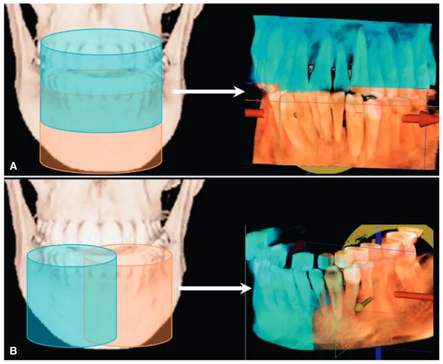
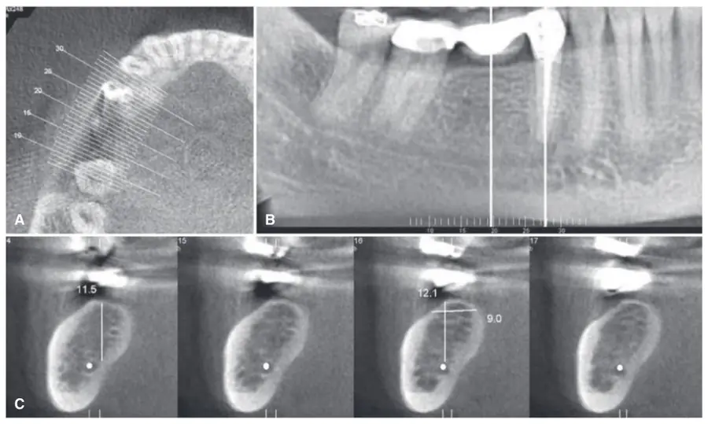

نسخه استخراجشده؛ ترجمه یا تأیید علمی انجام نشده است. وضعیت: captured
شکل و اندازهی FOV به سه چیز بستگی دارد: اندازه و شکل آشکارساز، هندسهی پروجکشن پرتو، و توانایی کولیمه کردن پرتو.

و شکل معمولش: «شکل تقریباً همهی حجمهای اسکن استوانهای است.» ولی یک استثنای هوشمندانه هست: «یک سازنده حجم اسکن مثلثی محدب (رولو) برای FOVهای متوسط تولید میکند که با شکل قوسهای دندانی نزدیکتر است و در مقایسه با حجم استوانهای، پرتوگیری را کاهش میدهد.»
و ردهبندی CBCT بر پایهی بیشترین FOV: کرانیوفاسیال (کل اسکلت کرانیوفاسیال، امکان آنالیز سفالومتریک)، ماگزیلوفاسیال (ماگزیلا یا مندیبل یا هر دو)، محدود (تصاویر با تفکیک بالا از نواحی محدود)، و دوختهشده (نواحی بزرگتر از چند اسکن محدود).
و سه روش بزرگ کردن FOV فراتر از اندازهی آشکارساز:
و دو نوع کولیماسیون — با یک داوری روشن: بیشتر دستگاهها از «سپرهای فلزی قابل تنظیم بهعنوان کولیماسیون اولیه در منبع» استفاده میکنند. و کولیماسیون الکترونیکی یعنی «برش دادهی ثبتشده روی آشکارساز که پیرامون ناحیهی مورد نظر است». و حکم روشن است: «کولیماسیون الکترونیکی نامطلوب است، چون به پرتوگیری بیشتر بیمار از آنچه برای وظیفهی تصویربرداری لازم است میانجامد.»
و چرا کوچک کردن FOV سهگانه سود میرساند:
و قاعدهی طلایی: «مطلوب است میدان به کوچکترین حجمی که ناحیهی مورد نظر را در بر میگیرد محدود شود. و این اندازه باید برای هر بیمار بر پایهی نیازهای فردی انتخاب شود.»
عوامل تعیینکنندهی پرتو دو دستهاند: وابسته به دستگاه (اندازهی لکهی کانونی، فاصلهی منبع تا جسم، فاصلهی جسم تا آشکارساز، فیلتراسیون، فرکانس پرتو)، و وابسته به اپراتور (mA، kVp، و زمان اکسپوز).

و دامنهی کاری: «بیشتر دستگاههای CBCT در ۹۰ kVp یا کمتر کار میکنند، و اندکی میتوانند تا ۱۲۰ kV بروند. عموماً دستگاههای kVp پایین با mA بالاتر کار میکنند.» و تنظیمات: برخی دستگاهها ثابت و غیرقابل تنظیماند، برخی پیشتنظیم برای اندازههای مختلف بدن دارند، و برخی تنظیم دستی kVp یا mA یا هر دو را میدهند.
و اصل حاکم: اپراتورها «باید بدانند این پارامترها هم کیفیت تصویر و هم دوز بیمار را تحت تأثیر قرار میدهند و انتخاب دقیق برای برآوردن اصل ALARA لازم است». اصل بهینهسازی دوز ایجاب میکند «عوامل اکسپوز طوری تنظیم شوند که تصویری تشخیصی-پذیرفتنی بر پایهی اندازهی بیمار و وظیفهی تشخیصی خاص» بسازند.
و حالا سه قاعدهی عملی که باید حفظ کنی:
و AEC در CBCT؟ «هرچند در MDCT رایج است، کنترل خودکار اکسپوز در دستگاههای CBCT ماگزیلوفاسیال در حال حاضر بسیار محدود است.» و اگر فراگیر میشد، «نیاز به تطبیق دستی پارامترها بر پایهی اندازهی بیمار را برطرف و پرتوگیری را کمینه میکرد».
و اندازهی دکسل و وکسل — یک زنجیرهی مهم: «اندازهی اسمی دکسل آشکارساز تفکیک فضایی نهایی تصویر CBCT را تحت تأثیر قرار میدهد.» و تعیینکنندههای اصلی اندازهی وکسل: ابعاد ماتریکس و اندازهی هر دکسل.
و پیامدش که بهآسانی نادیده گرفته میشود: «آشکارسازهایی با دکسلهای کوچکتر، فوتونهای کمتری در هر وکسل میگیرند و به نویز بیشتر میانجامند. در نتیجه، تصویربرداری CBCT با تفکیک بالاتر ممکن است به دوز بالاتری نیاز داشته باشد تا نسبت سیگنال به نویز معقولی برای کیفیت تشخیصی بهتر به دست آید.»
و بینینگ در CBCT: برخی دستگاهها انتخاب اندازهی وکسل میدهند؛ در این حالت آشکارساز «اطلاعات را روی مجموعهای از دکسلها در جهت افقی و عمودی جمع و میانگین میگیرد». نتیجه: «کاهش چشمگیر پردازش داده و کوتاه شدن زمان بازسازی ثانویه». و به همین دلیل «اندازهی وکسل باید مشخص شود که اکتساب است یا بازسازی».
و حالتهای اسکن — سه عامل شمار تصاویر پایه: نرخ فریم آشکارساز، گسترهی کمان چرخشی (۱۸۰ تا ۳۶۰ درجه)، و سرعت چرخش.
و نرخ فریم بالاتر، هم سود دارد هم زیان: «نسبت سیگنال به نویز را افزایش میدهد، تصاویر کمنویزتر میسازد و آرتیفکتهای فلزی را کم میکند. ولی نرخ فریم بالاتر به دوز بیشتر بیمار میانجامد» و «چون دادهی بیشتری به دست میآید، زمان بازسازی اولیه افزایش مییابد».
و در برابرش، پروتکلهای «اسکن سریع»: «نرخ فریم بهمراتب پایینتری به کار میبرند با کاهش قابل توجه دوز. ولی تفکیک تصویر این اسکنها ممکن است برای همهی وظایف تشخیصی کافی نباشد.»
و کمان چرخش: «بیشتر دستگاههای CBCT زاویهی اسکن ثابت دارند» — چرخش کامل ۳۶۰ درجه یا کمانهای جزئی (۲۰۰ تا ۲۷۰ درجه). «تصویربرداری با کمان کامل، دادهی پروجکشن کافی برای بازسازی باوفا میدهد.»
و بهای کمان جزئی: «هرچند زمان اسکن و دوز کاهش مییابد، تصاویر ممکن است نویز بیشتر و آرتیفکت درونیابی بازسازی داشته باشند.» و تصاویر بازسازیشده از مسیرهای کمتر از ۳۶۰ درجه «ممکن است آرتیفکت زاویهی محدود بهدلیل اطلاعات غایب داشته باشند» — شامل «خطخطی یکجهتهی پیرامونی بیشتر، و آرتیفکت کاپینگ میانصفحهای و گرسنگی فوتونی بارزتر».
و کوتاه کردن زمان اسکن — سه راه با کیفیت متفاوت: «افزایش نرخ فریم آشکارساز، کاهش شمار پروجکشنها، یا کاهش کمان اسکن. روش نخست تصاویری با بالاترین کیفیت میدهد، در حالی که دو روش دیگر نویز تصویر را افزایش میدهند.»
و کرنلهای CBCT — تفاوتی مهم با MDCT: «در بیشتر دستگاههای CBCT، مجموعهداده با یک الگوریتم بازسازی اولیهی پیشفرض بازسازی میشود که کاربر نمیتواند آن را کنترل کند.» ولی تازهها در راهاند: روشهای تکراری یا مبتنی بر یادگیری عمیق که «تصاویری با نویز کمتر و آرتیفکتهای فلزی و حرکتی کمتر» میدهند؛ و ابزارهای کاهش آرتیفکت فلز (MAR) و تصحیح آرتیفکت حرکت (MAC).